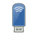

USB ModeSwitch
Dieser Artikel wurde für die folgenden Ubuntu-Versionen getestet:
Ubuntu 16.04 Xenial Xerus
Ubuntu 14.04 Trusty Tahr
Zum Verständnis dieses Artikels sind folgende Seiten hilfreich:
 Viele Netzwerk-Geräte mit USB-Anschluss wie WLAN- und UMTS-Sticks haben Treiber für Windows integriert und werden als sogenannte "flip-flop"- oder "Zero-CD"-Geräte bezeichnet. Diese Hardware wird zunächst immer als Speichermedium erkannt, damit die Treiber installiert werden können. Nach Installation der Treiber werden sie automatisch auf ihre eigentliche Funktion als Netzwerkkarte oder Modem umgeschaltet. Damit entfällt die unter Umständen mühsame Treibersuche, da diese quasi immer mit dabei sind.
Leider nutzt dieser auf Windows abgestimmte Mechanismus unter Linux nicht viel. Viele Geräte funktionieren auch unter Linux, z.B. mit dem usb-storage- oder dem option-Modul, einem optimierten Treiber für Hochgeschwindigkeits-Modems. Allerdings muss dazu erst der "Modus" umgeschaltet werden, da diese Art von Hardware auch unter Linux zunächst immer nur als Datenträger erkannt wird.
Für diese Umschaltung kann - abhängig von der eigenen Hardware - das Programm USB_ModeSwitch  verwendet werden. Es unterstützt eine Vielzahl von Geräten und wird laufend weiter entwickelt. Das Programm ozerocdoff basiert auf USB_ModeSwitch und bietet die gleiche Funktionalität, beschränkt sich aber auf Hardware der Firma Option .
verwendet werden. Es unterstützt eine Vielzahl von Geräten und wird laufend weiter entwickelt. Das Programm ozerocdoff basiert auf USB_ModeSwitch und bietet die gleiche Funktionalität, beschränkt sich aber auf Hardware der Firma Option .
Experten-Info:
Falls die UMTS-Hardware ausschließlich unter Linux genutzt wird, lässt sich der "flip-flop"- oder "Zero-CD"-Mechanismus evtl. abschalten. Die dazu erforderlichen AT-Befehle sind leider nicht allgemein gültig, sondern müssen zuerst recherchiert werden und exakt zur verwendeten Hardware passen. Um die ermittelte Befehlssequenz an die Hardware zu senden, kann das Programm minicom aus dem gleichnamigen Paket verwendet werden.
Achtung: bitte beachten, dass nach der dauerhaften Umschaltung der Windows-Treiber nicht mehr zugänglich ist.
Installation¶
Falls noch nicht vorinstalliert, werden die folgenden Pakete benötigt [1]:
usb-modeswitch
usb-modeswitch-data
 mit apturl
mit apturl
Paketliste zum Kopieren:
sudo apt-get install usb-modeswitch usb-modeswitch-data
sudo aptitude install usb-modeswitch usb-modeswitch-data
Welche Version in Ubuntu enthalten ist, erfährt man über die Ubuntu Paketsuche . Das kann insbesondere hilfreich sein, wenn Systeme mit nicht funktionierendem Internetzugang mit manuell heruntergeladenen Paketen versorgt werden müssen.
Da sich das Programm in ständiger Weiterentwicklung befindet, sollte bei Problemen mit der eigenen Hardware das Programm unter Umständen selbst aus dem Quelltext übersetzt (kompiliert) werden.
Manuell¶
Die neueste Version kann auch selbst kompiliert werden. Zuerst müssen folgende Pakete installiert [1] werden:
build-essential
libusb-dev
mit apturl
Paketliste zum Kopieren:
sudo apt-get install build-essential libusb-dev
sudo aptitude install build-essential libusb-dev
Dann kann der Quellcode von der Projektseite heruntergeladen, entpackt [3] und kompiliert [4] werden. Außerdem ist es auch hier ratsam, das neueste Archiv usb-modeswitch-data - meist neuer als die jeweilige Version von usb-modeswitch - herunterzuladen. Enthalten sind die aktuellen Geräte-Daten, udev-Regeln und Konfigurationsdateien. Auf der Projektseite ist vermerkt, mit welcher Programmversion es kompatibel ist.
Hinweis!
Fremdsoftware kann das System gefährden.
Die Standard-Kompilierung ist die empfohlene Methode für bereits unterstützte Geräte. Installiert werden der Ordner mit den Konfigurationsdaten (/etc/usb-modeswitch.d), ein Wrapper-Skript, eine udev-Regel sowie das eigentliche Programm. Eine Liste der unterstützten Geräte, die bisher ohne weitere Vorarbeiten funktionieren, liegt geordnet nach USB-IDs im Verzeichnis usb_modeswitch.d vor. Aktualisierungen des usb-modeswitch-data-Paketes erfolgen meist in kürzeren Zeitabständen als das Programm selbst. Daher im Download-Abschnitt überprüfen, ob eine neuere Version vorliegt.
Hinweis:
Versionen ab 1.1.x sind mit älteren Versionen ggf. nicht vollständig kompatibel, daher eine alte Version immer zuerst entfernen!
Wenn weitere Anpassungen für nicht unterstützte Geräte/Verbesserungen vorgenommen werden sollen, wird nur der Befehl make verwendet. Danach müssen die entsprechenden Veränderungen an der /etc/usb_modeswitch.conf in einem Editor [5] mit Root-Rechten [6] vorgenommen werden. Das Programm muss dann mit Root-Rechten ausgeführt werden: "sudo usb-modeswitch". Weitere Hinweise auf der troubleshooting-Sektion der Projektseite.
Funktionsweise¶
Für die automatische Erkennung werden folgende Bestandteile verwendet:
/usr/sbin/usb_modeswitch - Das eigentliche Programm
/lib/udev/usb_modeswitch - Ein Wrapper-Skript, welches das eigentliche Programm verwendet, um weitere ID-Prüfungen vorzunehmen und den Treiber zu laden
/lib/udev/rules.d/40-usb_modeswitch.rules - Die udev-Regel, die das Wrapper-Skript startet, wenn eine bekannte USB-ID erkannt wird
/etc/usb_modeswitch.conf - Globale Einstellungsdatei; hier kann das ausführliche Mitloggen des Umschaltvorganges aktiviert oder die Umschaltung komplett deaktiviert werden (falls man auf den Windows-Installationsspeicher zugreifen möchte).
/etc/usb_modeswitch.d und /usr/share/usb_modeswitch (ab Ubuntu 11.04) - Ein Verzeichnis, welches die spezifischen Setup-Informationen für die Geräte beinhaltet, jeweils nach den USB-IDs benannt, ggf. mit weiteren Merkmalen, wenn es zu bekannten Überschneidungen bei gleicher ID kommt. Wenn die USB-ID eines Gerätes in einem Namen dieser Liste auftaucht, bestehen gute Chancen, dass das Gerät unterstützt wird, selbst wenn dort ein anderer Hersteller/anderes Modell angegeben ist. Eine Zusammenstellung aller Konfigurationen wird unter dem Namen device_reference.txt
auf der Projektseite zur Verfügung gestellt.
Die Bestandteile arbeiten folgendermaßen zusammen:
Wenn ein Gerät eingesteckt wird, sucht, und ggf. findet, das udev-System das Gerät in den Regeln der 40-usb_modeswitch.rules. Es startet das Wrapper-Skript über ein weiteres bash-Skript im Hintergrund. Dieses Wrapper-Skript extrahiert einige Parameter zur Beschreibung des Geräts aus udev und sammelt einige weitere Informationen, um sicherzustellen, dass das Gerät richtig erkannt wird. Leider reichen die USB-IDs alleine dafür nicht aus. Das Programm wird dann vom Wrapper-Skript mit dem (hoffentlich) richtigen Konfigurationsdateinamen als Parameter gestartet und führt den eigentlichen Modus-Wechsel durch. Bei Erfolg wird die (neue) Ziel-ID an das Wrapper-Skript übergeben, welches daraufhin überprüft, ob mit dem umgeschalteten Gerät Treiber/Module verbunden gewesen sind, indem es nach "ttyUSB" oder "ttyACM"-Einträgen in /dev sucht. Wenn keine solchen gefunden wurden, wird das "option"-Modul mit "modprobe" geladen (Fehler werden, weil sie hinein kompiliert sein könnten, ignoriert). Dann wird die USB-ID des umgeschalteten Geräts dem Treiber als "new_id" übergeben.
Danach sollte das System das neue serielle Gerät automatisch erkennen. Nach Angaben des Entwicklers entsteht kein Schaden an der Hardware, wenn der Prozess fehlschlägt. Das Umschalten bzw. die Erkennung des umgeschalteten Gerätes kann allerdings einige Zeit (teilweise bis zu einer Minute) in Anspruch nehmen. Das ist alleine von der eingebauten Firmware abhängig.
Bekannte Probleme¶
Bei WLAN-Geräten kam es in der Vergangenheit zu Problemen mit dem NetworkManager, insbesondere der ModemManager-Komponente, die in Verbindung mit USB-Modems nicht sonderlich zuverlässig war. Vernünftige Resultate wurden dagegen mit dem Kommandozeilenprogramm wvdial erzielt, sowie mit verschiedenen Anwendungen, die eine Benutzerschnittstelle über PPP (wie kppp oder GNOME PPP) bereitstellen. Die Verwendung einiger der Programme erfordert allerdings etwas Vorwissen.
Die größte Hürde zur vollautomatischen Verwendung eines "umgeschalteten" Gerätes ist es, den richtigen Port für die Verbindung zu finden. Oft werden mehrere serielle Ports erstellt (teilweise bis zu fünf). Welches der richtige ist, lässt sich entweder über "Versuch und Irrtum" herausfinden, oder man findet den Port, der mit Interrupt-Transfer arbeitet. Das schaffte der NetworkManager leider nicht, und eine manuelle Wahl des Ports liess er auch nicht zu.
udev-Regel erstellen¶
Manche von USB_ModeSwitch unterstützte Geräte werden nicht umgeschaltet, weil sie nicht so initialisiert sind wie es USB_ModeSwitch erwartet. Hier fehlt meist die udev-Regel, die zusätzlich oder statt USB_ModeSwitch das Programm modem-modeswitch aus dem Paket udev verwendet. Dies kann bis Ubuntu Lucid Lynx 10.04 relativ einfach korrigiert werden. Mittels des Befehls
lsusb
sucht man bei eingestecktem Stick dessen sog. Vendor- und Product-IDs heraus, beispielsweise beim Huawei E160 (z.B. von O2, Tchibo und FONIC vertrieben):
ID 12d1:1003 Huawei Technologies Co., Ltd. E220 HSDPA Modem / E270 HSDPA/HSUPA Modem
Hier ist die Vendor-ID 12d1 und die Product-ID 1003. Für diese trägt man dann eine Regel in die Datei /lib/udev/rules.d/61-option-modem-modeswitch.rules ein. Hierzu öffnet man sie in einem Editor [5] mit Root-Rechten [6] und fügt am Ende der Liste ähnlicher Regeln folgende Zeile ein (12d1 und 1003 durch die oben ermittelten IDs ersetzen):
ATTRS{idVendor}=="12d1", ATTRS{idProduct}=="1003", RUN+="modem-modeswitch -v 0x%s{idVendor} -p 0x%s{idProduct} -t option-zerocd"Hinweis:
Ab Ubuntu 10.10 werden weder die Datei /lib/udev/rules.d/61-option-modem-modeswitch.rules noch das aufgerufene Programm /lib/udev/modem-modeswitch mittels Paket udev installiert. Ersatzweise kann die unter Huawei-Sticks angeführte udev-Regel verwendet werden.
Nach einem Neustart sollte der betreffende Stick dann automatisch auf Modembetrieb umschalten. Im laufenden Betrieb kann dies in einem Terminal mit folgendem Befehl bewerkstelligt werden:
sudo service udev reload
Beispiele¶
XS Stick W14¶
Die weitergehende Verwendung von usb-modeswitch wird im Artikel Archiv/XS Stick W14 beschrieben, um diese UMTS-Sticks in den Modem-Modus versetzen zu können.
Huawei Sticks¶
Huawei-Sticks können im Terminal mit folgenden Befehl vom Datenträger- in den Modemmodus geschaltet werden:
sudo usb_modeswitch -v 12d1 -p 1c0b -M '55534243123456780000000000000011062000000100000000000000000000'
Die Product-ID 1c0b ist dabei an die Product-ID des jeweiligen Huawei-Sticks im Datenträgermodus anzupassen. Nach dem manuellen Umschalten ist meist auch noch ein manuelles Laden des Treibers erforderlich:
sudo modprobe option echo "12d1 1c05" | sudo tee /sys/bus/usb-serial/drivers/option1/new_id
Die Product-ID 1c05 ist dabei durch die Product-ID des Huawei-Sticks im Modemmodus zu ersetzen.
Eine Automatisierung dieser Befehle ist mittels udev möglich. Dazu legt man mit einem Editor [5] mit Root-Rechten [6] die Datei /etc/udev/rules.d/70-usb-modeswitch.rules mit folgendem Inhalt an:
# eigene udev-Regeln für UMTS-Sticks
ACTION=="add", SUBSYSTEM=="usb", ATTRS{idVendor}=="12d1", ATTRS{idProduct}=="1c0b", RUN+="/usr/sbin/usb_modeswitch -v 12d1 -p 1c0b -M '55534243123456780000000000000011062000000100000000000000000000'"
ACTION=="add", SUBSYSTEM=="usb", ATTRS{idVendor}=="12d1", ATTRS{idProduct}=="1c05", RUN+="/bin/bash -c 'modprobe option && echo 12d1 1c05 > /sys/bus/usb-serial/drivers/option1/new_id'"
Die Product-ID 1c0b ist dabei durch die ID im Datenträgermodus, 1c05 durch die ID im Modemmodus zu ersetzen. U.U. müssen die Geräte noch neu eingelesen werden: udev.
Unterstützte Geräte¶
| Von USB_ModeSwitch unterstützte Geräte (Auszug) | ||||
| Handelsname | auch vertrieben als | USB-ID als Datenträger | USB-ID als Modem | Ubuntu-Version |
| MediaTek Inc. S4222 (MD99079) | ALDI TALK Webstick | 0e8d:0002 | 0e8d:00a5 | 12.04 |
| ZTE MF637 | Web'n'Walk Stick Fusion | 19d2:2000 | 19d2:0037 | 9.10 |
| 4G XS Stick W10/W14 | MobiData MBD-200HU | 1c9e:f000 | 1c9e:9603 | 9.10 |
| 4G XS Stick P14 | 1c9e:f000 | 1c9e:9605 | 10.04 | |
| 4G UXS1 | web'n'walk Box Mini | 1995:4e44 | 11f5:0008 | 16.04 |
| Option iCON 210 | PROLiNK PHS100, Hyundai Mobile MB-810 | 1e0e:f000 | 1e0e:9000 | 8.10, 9.04, 9.10 |
| K3765-HV | K3765 | 12d1:1520 | 12d1:1465 | 10.04 |
| Huawei E620 | BASE bzw. FONIC Surfstick | 12d1:1446 | 12d1:1001 | 10.04, 10.10 |
| Huawei E1550 | Medion S4012 | 12d1:1446 | 12d1:140c | 10.04, 10.10 |
| Huawei E1552 | web'n'walk Stick Fusion II | 12d1:1446 | 12d1:1436 | 10.04, 10.10 |
| Huawei E1750 | wetter.com-Surfstick | 12d1:1446 | 12d1:14ac | 10.04, 10.10 |
| Huawei E160/E220 | O2 Stick Tchibo Internet-Stick FONIC SurfStick Medion S4011 | 12d1:1003 | 12d1:1003 | 10.04 |
| Huawei E173 | Mobile Broadband USB Stick | 12d1:1446 | 12d1:1436 | 11.04, davor s.Huawei-Sticks |
| Huawei E173s | Mobile Broadband USB Stick 615 | 12d1:1c0b | 12d1:1c05 | 11.04, davor s.Huawei-Sticks |
| Vodafone(Huawei) E173s-1/K3770 | Pro7 Web Stick | 12d1:14d1 | 12d1:14c9 | 11.10, davor s.Huawei-Sticks |
| Huawei E303/E353Ws-2/E3131 | HiLink USB-Stick | 12d1:1f01 | 12d1:14db | ab 10.04, Anleitung im Forum |
| Huawei E352s-5 | Telekom web'n'walk Stick Fusion III | 12d1:14fe | 12d1:1506 | 11.10, davor s.Huawei-Sticks |
| Huawei E3531 | 12d1:15ca | 12d1:1506 | 14.04 | |
| Huawei E5786 | LTE MiFi | 12d1:15ca | 12d1:1506 | 16.04.1 LTS |
| Huawei K5005 | Vodafone Mobile Broadband LTE | 12d1:14c3 | 12d1:14c8 | 10.04 und 11.10, nach Eintrag in udev s.Huawei-Sticks |
| Alcatel W800 | Telekom Speedstick LTE IV | 1bbb:0000 | 1bbb:0195 | Gerät wird als Ethernet Netzwerkkarte erkannt |
Die Liste bitte um andere unter Ubuntu getestete Geräte erweitern! Auch der Entwickler von USB ModeSwitch bittet darum, bisher nicht unterstützte Hardware zu melden. Er gibt außerdem Hilfestellung zur Ermittlung des Umschaltkommandos, wenn es noch nicht bekannt ist (siehe Link zum Support-Forum).
 - Ubuntu User, 02/2010
- Ubuntu User, 02/2010- Erstellt mit Inyoka
-
 2004 – 2017 ubuntuusers.de • Einige Rechte vorbehalten
2004 – 2017 ubuntuusers.de • Einige Rechte vorbehalten
Lizenz • Kontakt • Datenschutz • Impressum • Serverstatus -
Serverhousing gespendet von